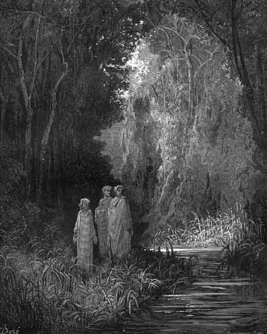

Canto XXVIIIO Paraíso Terrestre - O rio Letes
|
|  |
| O Paraíso Terrestre (Jardim do Éden). Ilustração de Gustave Doré (século XIX). |
Parei de caminhar quando encontrei um riacho, de águas tão transparentes que as mais limpas águas da Terra pareceriam conter alguma mistura turva diante delas. Essas águas claras nada escondiam, apesar do rio se mover escuro, sob a sombra das árvores que não deixam passar sequer um raio de Sol ou de Lua. Eu parei e fitei além do rio para admirar a paisagem, quando nessa paisagem apareceu uma jovem solitária, do outro lado do rio, cantando e escolhendo flores que coloriam o seu caminho.
- Ó bela jovem, aquecida pelos raios do amor, queiras vir até a beira do rio - disse-lhe eu - para que eu possa entender o significado de teu canto.
Ela então se virou e veio caminhando entre as flores, atendendo ao meu pedido. Cantava, com os olhos abaixados, até chegar às margens do riacho, quando levantou o rosto e seus olhos encontraram os meus. Creio que nem os olhos de Vênus não estavam tão iluminados no dia em que foi inocentemente perfurada pela flecha de Cupido.
- Sois novatos nesta terra - disse ela - e talvez estejais surpresos ao me ver sorrindo neste lugar que um dia foi o berço da humanidade. Mas deixai que a luz do salmo Delectasti ilumine e afaste a névoa de vossas mentes. E tu que estás à frente e que me chamaste, se quiseres saber algo mais, pergunta, pois eu estou preparada para responder qualquer dúvida que tiveres.
- As águas e os sons desta floresta - disse eu - não parecem dar sentido à crença que antes eu tive sobre este lugar.
- Eu explicarei aquilo que te confunde - disse ela -. O supremo Bem fez o homem bom e voltado ao bem, e deu-lhe este lugar como penhor de eterna paz. Por culpa do homem, pouco tempo pôde permanecer aqui. Por sua culpa, trocou sua alegria pela dor e sua diversão pelo trabalho árduo. Para escapar das instabilidades climáticas da Terra, este monte foi elevado para além do portão de onde não passam tempestades nem terremotos. A brisa é causada pelo movimento do primeiro céu, que balança as folhas das árvores, e espalha suas sementes por toda a Terra. Saiba que esta terra santa onde tu estás possui todas as sementes e contém frutos que nunca antes encontraste na Terra. A água que vês não surge de nascente, mas da graça de Deus, e ela flui para dois lados. As águas deste riacho têm o poder de apagar toda a memória do pecado. As águas do outro restabelece todas as lembranças das boas ações. Este é o Letes e o que fica do outro lado chama-se Eunoé. Não existe sabor no mundo que se iguale às águas desses dois riachos. Mas de nada adianta beber as águas do Eunoé sem antes provar as águas do Letes. Acredito que a tua sede já esteja saciada quanto ao que já conheces deste lugar, mas te ofereço ainda mais um corolário, que não te deixará menos contente se aprenderes mais do que eu te prometi. Aqueles poetas antigos que cantavam sobre a idade do ouro e seu estado eterno de felicidade, deveriam ter em mente, talvez, este Parnaso, cuja lembrança retornava em seus sonhos. Aqui era inocente a humana raiz. Aqui, na eterna primavera, está todo o fruto e o néctar que alimenta sua inspiração.
Enquanto ela falava, eu rapidamente olhei para os meus dois poetas e neles pude ver o sorriso provocado por aquelas palavras. Depois, voltei a contemplar a bela dama da floresta.